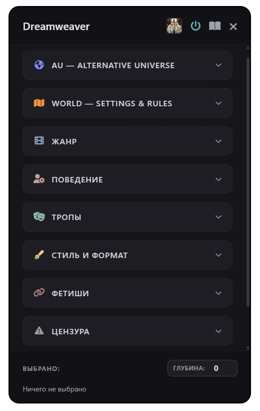

Расширения
Dreamweaver
Мощный сюжетный пульт управления. Позволяет прямо во время игры в пару кликов менять сеттинг (AU), добавлять тропы, фетиши и жанры без ручного ввода промптов.

Само расширение находится в "Волшебной палочке", там, где вы пишете свои сообщения.
Быстрый сброс: все выбранные теги красиво отображаются внизу панели. Не нужно искать их по вкладкам, чтобы отключить — просто тыкаете на тег в списке, и он удаляется.
Верхние кнопки:
- Выбор персонажа: в групповых чатах можно добавить тег «Глобально» на весь чат (например, жанр фэнтези), а можно выбрать конкретного бота и повесить тег только на него (например, сделать его тайно Protective к вам).
- Вкл/выкл: банально, но расширение можно выключить.
- Книга: если включить, то добавляет коротенькое объяснение каждому тегу.
Нижние кнопки:
- Глубина: Цифра, которая отвечает за то, насколько глубоко в память ИИ засядут эти правила.
Что внутри?
- 🌌 AU: Омегаверс, соулмейты, вампиры, кицунэ, эпоха возрождения или постапокалипсис.
- 📜 Правила мира: задаем атмосферу — будь то тоталитаризм, запрещенная магия или сектантство.
- 🎭 Жанр: от лампового Slice of Life и милого Shoujo до жесткого Horror, драмы и эротики.
- 😈 Поведение: заставляем бота быть заботливой мамочкой, ревнивым психом или милой булочкой.
- 📖 Сюжетные тропы: всеми любимые «от врагов к возлюбленным», «одна кровать», «любовный треугольник» и так далее.
- 🖋️ Стиль и формат: стиль написания текста. Стилей мало, потому что я этим особо не пользуюсь, но вы можете что-нибудь предложить или добавить самостоятельно.
- ⛓️ Фетиши: небольшой список фетишей, которые можно добавить персонажу.
- 🔞 Цензура: выбор рейтинга для вашей РП: SFW, NSFW, Extreme Gore, Pure Smut.
- ⚙️ Кастом: если готовых тегов мало, в этом разделе вы можете добавить свои промпты. Есть дополнительная кнопка с большим окном для ввода текста.
DreamAlbum
Превращает хаос из генераций картинок в эстетичную галерею и добавляет полезные инструменты прямо в интерфейс чата.

Для чего это нужно? Если вы активно генерируете арты прямо в чатах ST, то знаете, как легко потерять классную картинку среди десятков сообщений. DreamAlbum решает эту проблему!
Примечание: расширение создано на основе extblocks.
Главные фичи:
- 🖼️ Единая галерея (Альбом): Все изображения из чата собираются в красивой сетке. Доступен полноэкранный просмотр, зум, свайп и поворот.
- ✨ Интерактивные блоки: При наведении на картинку появляются кнопки: развернуть, скопировать/отредактировать промпт, перегенерировать или удалить.
- 🎨 Плавающие стили: Настройте любимые промпты и генерируйте арты в один клик плавающими кнопками (можно связать с MoodTube!). Долгое нажатие открывает ввод своего запроса.
- 🌈 Темы оформления: 6 встроенных тем альбома (Розовая, Сумерки, Темный лес, Океан, Затмение) и автоматическая подстройка под вашу тему ST.
- 👻 Скрытые фото: Неудачные генерации можно скрыть из основной сетки (возвращаются долгим нажатием).
- 🔍 Умный просмотр: Удобный просмотр и копирование оригинального промпта от любой картинки.
- 💬 Кнопка «В чат»: Быстрый прыжок к сообщению, где была создана картинка, чтобы освежить в памяти сюжет.
- 🛡️ Чистый контекст: Блоки генераций внешние — они не попадают в контекст РП и экономят ваши токены, чат чистить не придется!
- ⚙️ Гибкость: Настройка или отключение кнопок на картинках, поддержка спиннера загрузки вашего расширения.
Важно знать:
- Обязательно включите «Внешние блоки» в вашем расширении для генерации изображений. (Необязательно, если используете только как альбом).
- В стиль вставляйте свой полный тоггл для генерации без лишних CSS/HTML (с выводом только
<img>). - Кнопка «Удалить» работает только для новых блоков DreamAlbum. Старые картинки в тексте удалить нельзя.
- Ищите расширение в "Волшебной палочке"! 🪄
Секретный Проект
Третье расширение уже находится в разработке. Заглядывайте сюда позже! ✨